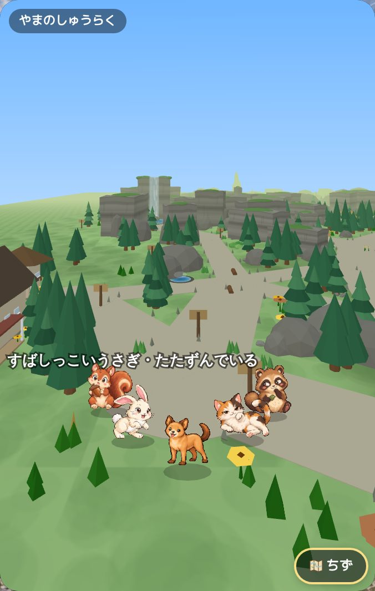
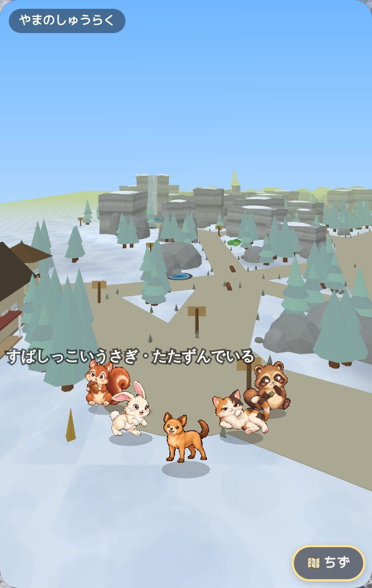
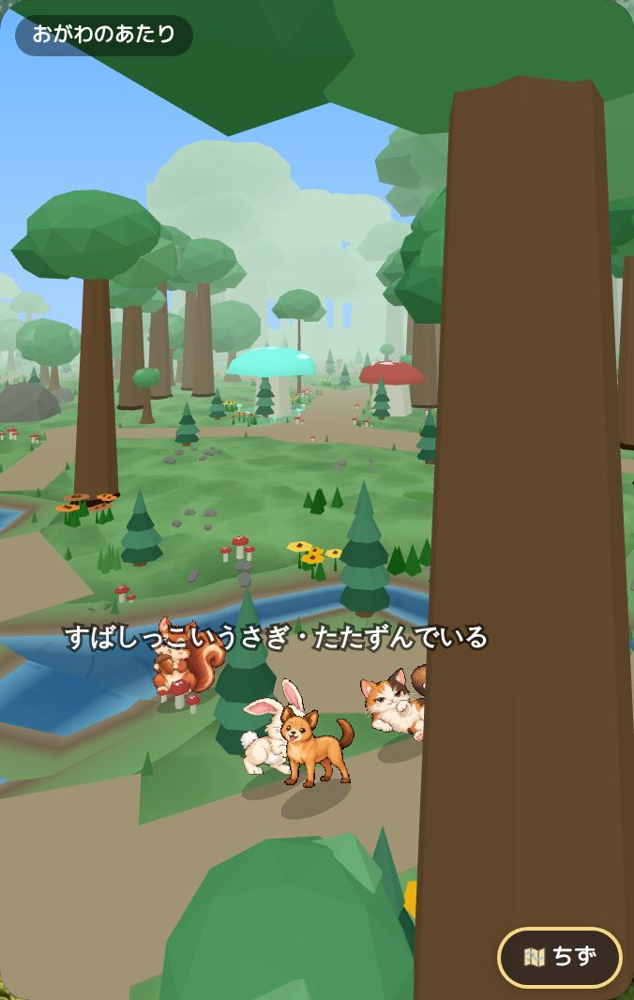
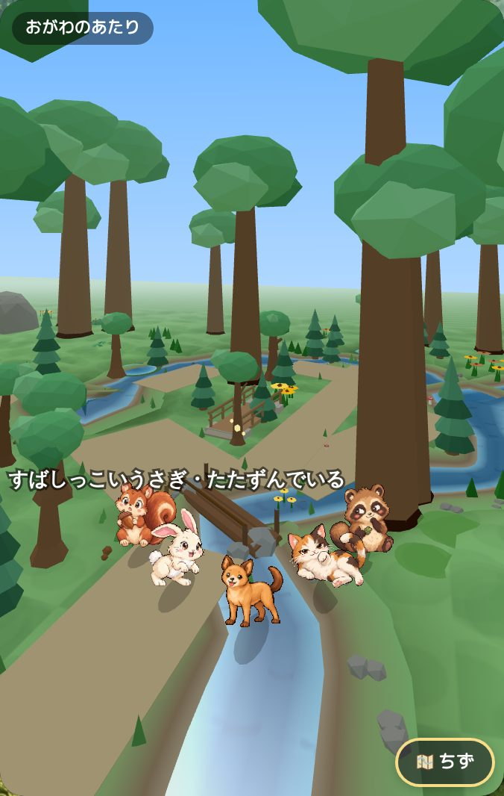
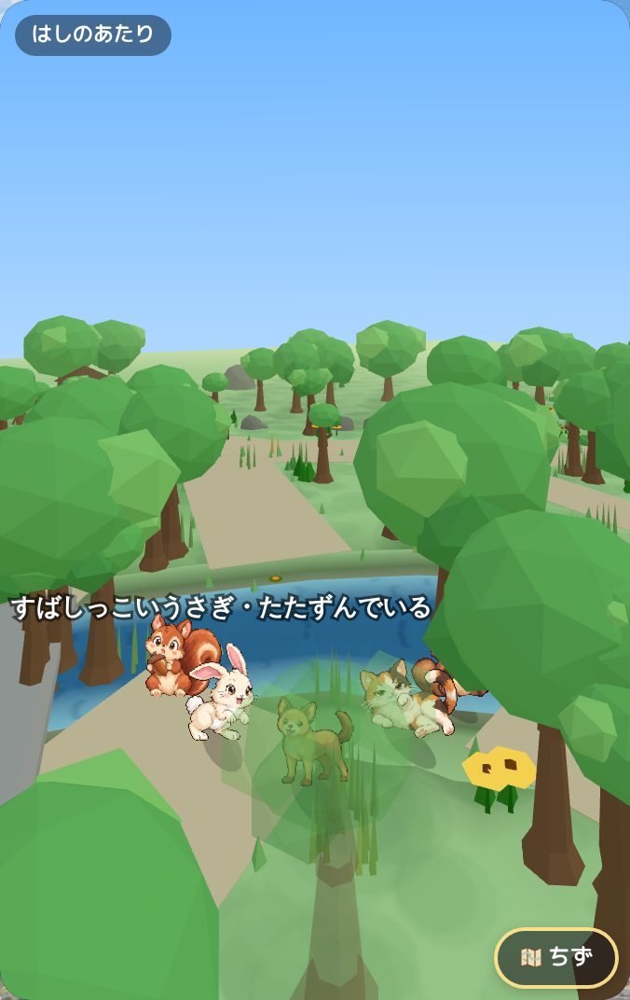
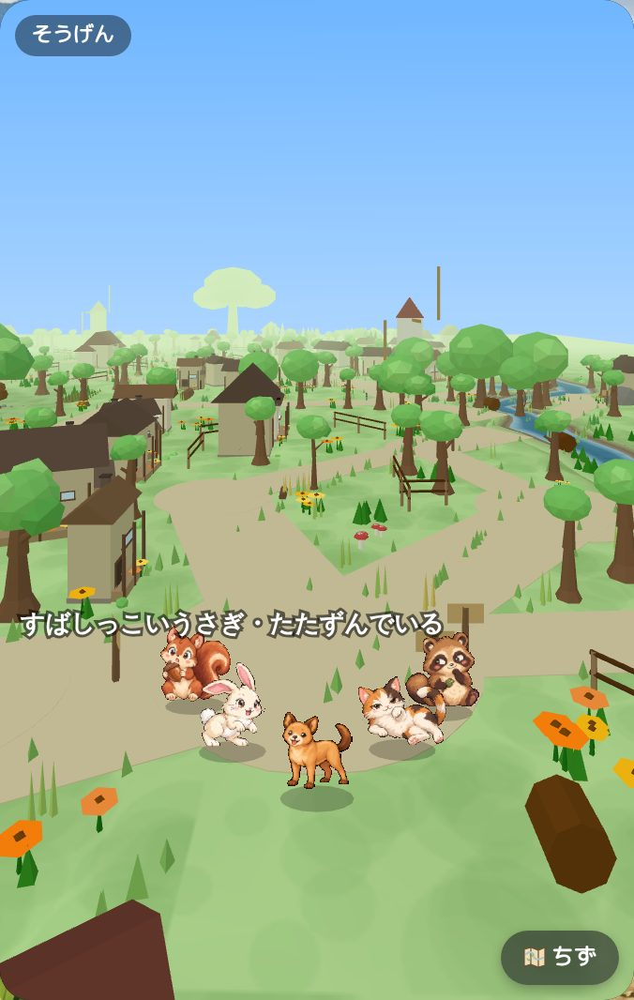

めぐる 3D — Art Direction v1 → Geometry / Terrain / Regional Identity / Runtime Quality Pass
左 = BEFORE(Art Direction v1・PR #371 @ 69a8857b・iPhone Human QA 済み)。右 = AFTER(feat/meguru-3d-geometry-terrain-v1)。headless Chromium の しゃしん(iPhone 390 幅・昼 / 晴れ / 夏に 固定)。完成の 判定は しない。最終判断は iPhone の Human QA。
Human QA の 未承認課題 → この pass で したこと
| 課題 | したこと |
|---|---|
| HQ-1 残像 | すかしの ghost が 白い 半透明の かたち だった(葉 / 家 / かべの material が 白 + instance color)→ もとの いろ に。ray で ほんとうに 隠す 物 だけ すかす(city で 131 → 平均 10)。大きな 物は うすく。線分の ふちで ちらつかない(6 frame) |
| HQ-2 player が きえる | カメラの まわりの がけ も すかしの 候補に(ジャングルの どうくつ)。ヤシ / 電柱 など あたりの ない 高い 物 も 候補に。ちかい 順に 16 まで。&perf=1 に ray の 見え かた(ray n/3・occl) |
| HQ-3 カクつき | すかしの 出入りで 形ごとの instance 全部(数千 × 64 byte)を 送り なおして いた → かわった 1 つ だけ。1 frame めの bounding で かげが きえて いた。解像度の 自動調整(2 → 1.5)。まい frame の いろの alloc なし |
| HQ-4 予算 | city 183k → 約 130k、jungle 214k → 約 173k、forest 145k → 約 148k(地形 + 小川 を 足して)。透明 fade で けさない |
| HQ-5 平面的 | Terrain v1: 道 / spot / 敷地 は 平ら、ひらけた ところ に 丘、森の 根の 起伏、砂丘の 尾根、雪の 土手、がけの 足もと、海へ ひくく、池は くぼ地、小川は 谷 |
| HQ-6 / HQ-7 小川・水 | 小川 / 川 = 1 本の ながれ(谷の 断面 + 水面 + 岸の 石 / あし / 草 / 花)。水の spot は 小川の よどみ(池の 円盤を ならべない)。海 / 川 / 池 で 面を かえる |
| HQ-8 橋 | Bridge v4: 交わりの いち・むき・ながさ から。床は 水面より 上・下の 梁・橋台・橋脚・てすり・だん。丸太 / 木 / 石(アーチ)/ ロープ / 用水路の 板 は かたちが ちがう。橋の ない 交わりは 飛び石 |
| HQ-9 家 | Building v4: family(こいえ / 平屋 / 2 かい / 農家 / 納屋 / 小屋 / 日干し煉瓦 / みせ / 物置)。切妻 / 寄棟・ポーチ・出窓・縁側・はなれ。小さな 家は 大きな 屋根(シルエット 高さ / はば ≤ 1.5) |
| HQ-10 いえ ≒ いなか | いえ = 家ごとの 庭(花だん・ポスト・ひくい さく・飛び石)。いなか = ひろい 丘・畑の うね・用水路 と 板の はし・ひくい 農家 と 納屋 |
| HQ-11 もり / ジャングル | もり = つめたい みどり・丸太 + こけ + きのこ・しだ。ジャングル = 大きな は の 下草・canopy の つる・ちかい もや |
| HQ-12 木 | Tree v4: 根もとの はり・2 だんの 幹(すこし 曲がる)・枝・白っぽい ほそい 木 |
| HQ-13 小物 | 自転車を 立てた(わ 2 つ + フレーム + ハンドル + サドル)。水車 / 観覧車の わ も たて |
| HQ-14 地域の 文法 | REGION3D.grammar(13 地域 × 10 項目) |
| HQ-15 季節 / 天気 | 山: 春 / 夏 = 高原の みどり、秋 = かれ草、冬 / 雪 = 雪。大木も 季節の いろ。3D でも 雨 / 雪 の つぶ |
山 — 夏 / 冬


小川 / 川 / 橋 の 近く



